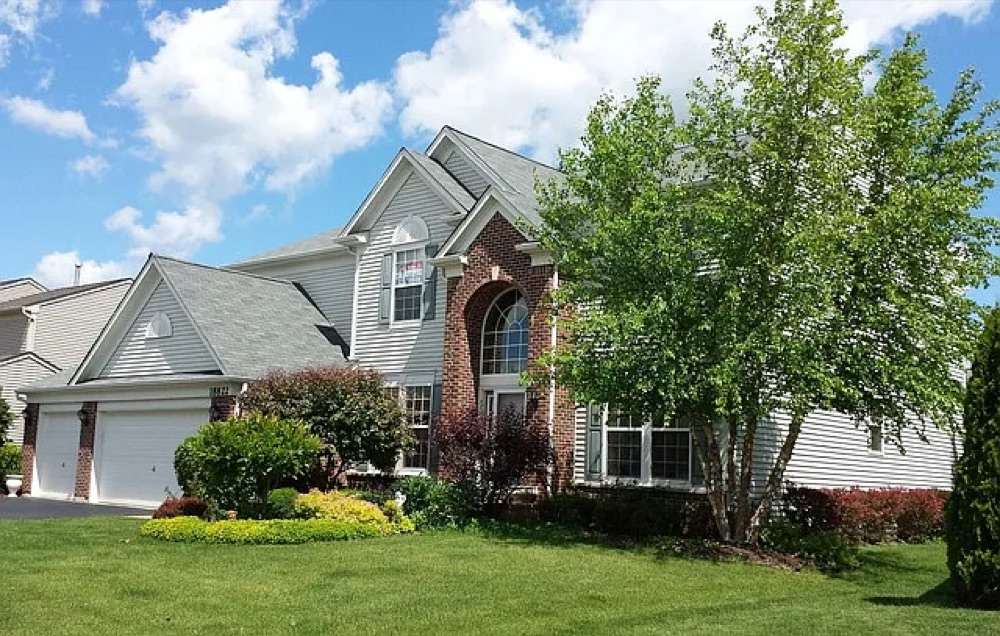
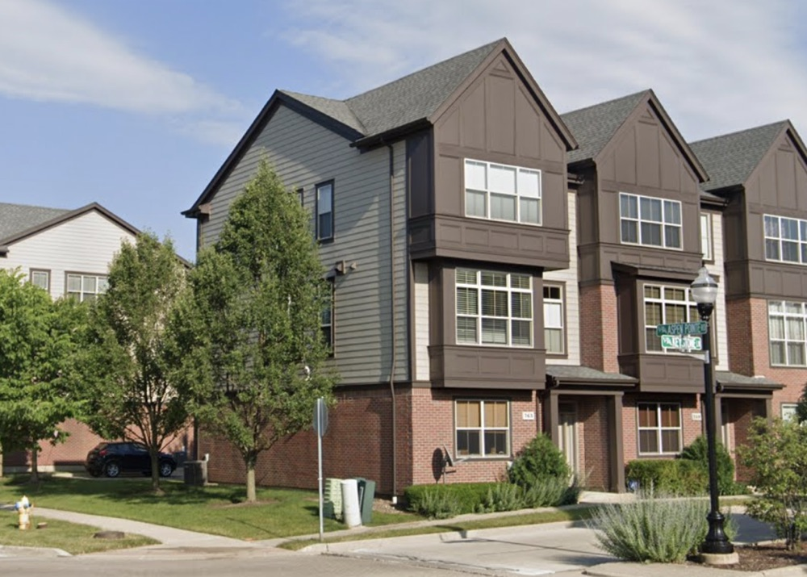
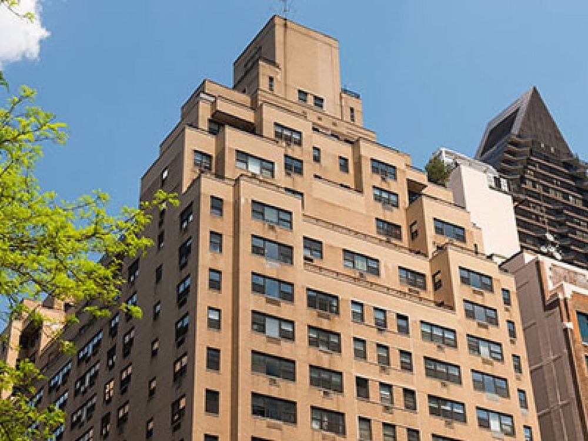

House of dreams: Why I built this space
I grew up in the north Chicago suburbs. Summers were graceful and winters were unforgiving. Seasons were the most dynamic thing about Midwest suburbia. Northbrook, Oakbrook, Long Grove, Buffalo Grove, Oak Park, Highland Park. The towns were about as diverse as their names.
Despite its homogeneity, I enjoyed growing up in Illinois. I spent the first eight years of my life in Gurnee. I lived in a big house with a driveway just large enough to accommodate my chalk drawings. My brother and I’s snowman inhabited our front yard during frigid blizzards. Our backyard was where I would often spot deer, rabbits, and other woodland creatures skittering by.
As I grew bigger, the homes I lived in grew smaller. In 2010, we moved into a town home in Vernon Hills, IL. The home’s narrow halls and obstructive layout made it feel enclosed, despite its vertical span. It was the home I experienced my teenage years in. Throughout college, I shared small dorms and apartments with my friends. Now, I share an even smaller apartment in New York with my current roommates, though the space is quite sizable by city standards.
The downsizing of my homes existed somewhat in parallel to the downsizing of my dreams and aspirations. The home in Gurnee was where I dreamt of becoming an actress, a fashion designer, a pop star, or perhaps a poet. In the town home of my adolescence, I imagined my life as an art teacher or art curator. In college, I whittled my aspirations into a stable career in tech as an experience designer, which I soon discovered to be deceptively shiny and novel.
I abandoned more of my belongings in my previous homes, as I did with pieces of my essence. Like the objects I kept in my home, my dreams and elements of my personality became more utilitarian. I wouldn’t call this particularly regressive, though. After all, I am deeply content with and grateful for my career. However, I find that practicality in itself does not bear much fruit, and of regret, none at all.
And therefore, this space is a reclamation of the things lost in the catacombs of my mind. It is not a reversal of time as I do not believe much in the what-ifs of life. It is the feeling of sifting through old things in an attic or a childhood bedroom and looking back at who you once were with fondness, maybe even envy.
It is a journal, a playground, and a crypt. It is a space where frivolous ideas are tinkered with, where the remarkable ones are realized, and the modest ones are honored. It is the largest house I have lived in yet.


